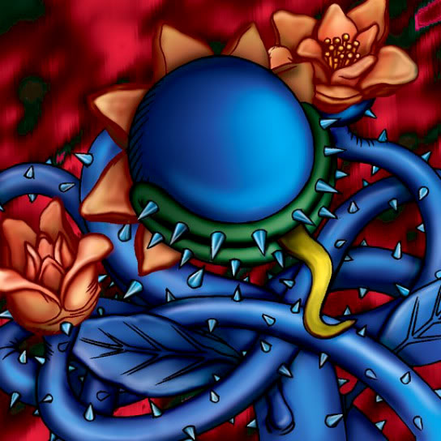

Darkworld Thorns

STATS
ATK: 1200
DEF: 900DECK COST
Deck Cost per Card: 21Fusion List (44 Possible Fusions)
- Darkworld Thorns + Air Marmot of Nefariousness = Flower Wolf
- Darkworld Thorns + Armaill = Bean Soldier
- Darkworld Thorns + Armored Zombie = Pumpking the King of Ghosts
- Darkworld Thorns + Blue-Eyed Silver Zombie = Pumpking the King of Ghosts
- Darkworld Thorns + Bone Mouse = Pumpking the King of Ghosts
- Darkworld Thorns + Clown Zombie = Pumpking the King of Ghosts
- Darkworld Thorns + Crawling Dragon #2 = B. Dragon Jungle King
- Darkworld Thorns + Crawling Dragon = B. Dragon Jungle King
- Darkworld Thorns + Dancing Elf = Queen of Autumn Leaves
- Darkworld Thorns + Darkfire Dragon = B. Dragon Jungle King
- Darkworld Thorns + Dragon Statue = Bean Soldier
- Darkworld Thorns + Dragon Zombie = Pumpking the King of Ghosts
- Darkworld Thorns + Fiend's Hand = Pumpking the King of Ghosts
- Darkworld Thorns + Fire Reaper = Pumpking the King of Ghosts
- Darkworld Thorns + Kagemusha of the Blue Flame = Bean Soldier
- Darkworld Thorns + Key Mace = Queen of Autumn Leaves
- Darkworld Thorns + Koumori Dragon = B. Dragon Jungle King
- Darkworld Thorns + Lady of Faith = Queen of Autumn Leaves
- Darkworld Thorns + Lesser Dragon = B. Dragon Jungle King
- Darkworld Thorns + Lunar Queen Elzaim = Queen of Autumn Leaves
- Darkworld Thorns + M-Warrior #1 = Bean Soldier
- Darkworld Thorns + M-Warrior #2 = Bean Soldier
- Darkworld Thorns + Mech Mole Zombie = Pumpking the King of Ghosts
- Darkworld Thorns + Mystical Sheep #1 = Flower Wolf
- Darkworld Thorns + Nemuriko = Queen of Autumn Leaves
- Darkworld Thorns + One-Eyed Shield Dragon = Skelgon
- Darkworld Thorns + Oscillo Hero = Blackland Fire Dragon
- Darkworld Thorns + Petit Dragon = B. Dragon Jungle King
- Darkworld Thorns + Princess of Tsurugi = Queen of Autumn Leaves
- Darkworld Thorns + Queen's Double = Queen of Autumn Leaves
- Darkworld Thorns + Shadow Specter = Pumpking the King of Ghosts
- Darkworld Thorns + Silver Fang = Flower Wolf
- Darkworld Thorns + Skull Servant = Pumpking the King of Ghosts
- Darkworld Thorns + Stone D. = B. Dragon Jungle King
- Darkworld Thorns + Supporter in the Shadows = Bean Soldier
- Darkworld Thorns + Swordsman from a Foreign Land = Bean Soldier
- Darkworld Thorns + The 13th Grave = Pumpking the King of Ghosts
- Darkworld Thorns + The Little Swordsman of Aile = Bean Soldier
- Darkworld Thorns + The Shadow Who Controls the Dark = Darkworld Thorns
- Darkworld Thorns + Water Magician = Queen of Autumn Leaves
- Darkworld Thorns + Waterdragon Fairy = Queen of Autumn Leaves
- Darkworld Thorns + Wicked Dragon with the Ersatz Head = B. Dragon Jungle King
- Darkworld Thorns + Wood Remains = Pumpking the King of Ghosts
- Darkworld Thorns + Yamatano Dragon Scroll = B. Dragon Jungle King